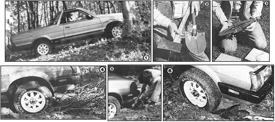

Folks who occasionally have to take a truck or car off the beaten path - to haul firewood, search for errant farm animals, etc. - always face the possibility of encountering a steep grade, an obstruction, or a soft surface that will bring the vehicle to an inopportune halt. The following information might just make all the difference between remaining stuck and . . .
Excerpted from Getting Dirty: The Basics of Off-Road Driving by Tom Madigan. Reprinted with permission, Subaru of America, Inc. Copyright © 1981.
If you challenge the dirt long enough, the chances of becoming stuck increase proportionally. If, through some miscalculation, your vehicle becomes bogged, the first thing to remember is, don't panic! In most cases just a quick rational analysis of the situation, a few minutes of manual labor, and presto, the vehicle will be free. We will attempt to offer only basic guidelines to aid the uninitiated driver in getting out of trouble, a look at the most common miscues.
One of the most sensible learning aids for the beginner in off-road travel is to accompany a seasoned enthusiast for at least two or three outings. This buddy system will allow the novice to experiment driving different types of terrain, and if trouble strikes, aid will be at hand. Another habit that should be adopted from the start is to carry a tow strap of some type in your vehicle at all times driving off-road. This gives you an added safeguard in the event of a problem when help is needed to haul the vehicle to safety, using a second machine.
Soft sand is the most common nemesis of the novice off road driver. Excessive wheelspin and too deep sand often combine to produce a strained machine. Overcoming the problem is somewhat tricky, but once learned, the method becomes easier. A path must be cleared in front of and behind all four wheels for at least five feet. Then lower the tire pressure to about 12 PSI. If you do not have a tire gauge, lower the pressure until the sidewall of the tire develops a slight bulge. If possible, using a 12x12x1-inch board as a base, jack the vehicle up far enough to pack traction material under the tires. Raise the front end up first, then the rear. Traction material can be made from a variety of ingredients. Leafy branches from trees, cut up bushes, or small rocks will make a reasonable base for tires to bite. Be sure no one is standing behind the vehicle: Spinning tires throw debris.
The material should be packed about 1/2 to 1 inch thick and extend (in front of the vehicle) for about ten feet. Once the vehicle gains momentum, don't stop until you reach solid ground. Keeping the machine moving is the answer to overcoming soft sand. And a smooth use of the throttle to limit wheelspin is the technique used to gain that needed momentum. Remember, once the day's sand blasting is over and you reach the highway, be sure to bring tire pressures back to a normal level.
Removing a stuck vehicle from deep mud is somewhat similar, with the exception that it is a much more messy, slimy, and all-around grubby operation. Face it, off-roading can be a dirty business. In most circumstances, you will not be able to raise the vehicle with a jack. Therefore, traction material must be forced or stuffed under each wheel in the best manner possible. Rocks, branches, pieces of wood, even chunks of cardboard make suitable traction material. Once the vehicle gains traction, keep a steady pace until clear and onto solid ground. Some off-road drivers use a method called "duck walking," in which the wheels are turned lock to lock while trying to gain traction. We prefer keeping the wheels straight and allowing the tires to follow the path of least resistance.
Becoming high-centered is another common and embarrassing predicament for the novice off-road driver. High-centering occurs when the breakover angle becomes too severe and two drive wheels (one front and one rear) lose traction. Subaru owners must remember that the Subaru four-wheel-drive vehicle averages about 6-1/2 inches of ground clearance. If an obstacle is traversed with a sharp breakover angle, the vehicle may then be caught on a portion of the undercarriage, causing a teeter-totter effect. To avoid high-centering, caution should be used when climbing over large rocks, topping steep embankments, or crawling over logs. If the vehicle becomes stranded, simply build up traction material under the wheels which have lost traction and ease the vehicle to solid ground.
Getting stuck in a deep water crossing can be troublesome from the standpoint of being forced to leave the vehicle and wade through the water, attempting to get the vehicle stable. Deep water problems usually occur when one of the wheels drops into an unseen hole or the skid-plate hangs up on a large boulder submerged from view. Manual labor is required to either fill the hole or remove the obstruction. This situation is one time an electric winch is a valuable tool. When the obstruction is minimal, rocking the vehicle, using first gear and reverse, will sometimes allow the drive wheels to gain traction. If the driver is unable to build a traction base for the vehicle, then the only alternative is to go for help. Care should be taken not to leave a vehicle stranded in deep water for long, as currents and swift flow will cause the water to build up around the machine and may cause leakage into the interior.
There are a couple of stuck situations that should be noted as serious, and professional help is the best method of combating them. Dropping into a ditch, front end first, is one of the most difficult positions to overcome. Here the vehicle's loss of tractable effort is due to a loss in the coefficient of traction. The result is wheelspin and the inability of the vehicle's drive wheels to pull the machine's bulk out of the hole. There is nothing left to do but tow or winch the vehicle to solid ground.
The other problem requiring outside assistance is the case of a vehicle's losing traction while trying to negotiate an off-camber embankment. Here excessive wheelspin can cause the vehicle to lie over on its side, causing a more serious problem than just being stuck. Again, it's time to abandon the effort and call for help.
In climbing a steep hill, the loss of traction can create a stuck situation. In this case, place the vehicle in reverse (the lowest gear ratio), keep the wheels straight, and place a slight drag on the brakes while backing down in your own tracks. Never disengage the clutch or put the vehicle in neutral.
Perhaps most important, regardless of the trouble you find yourself in, don't get a case of "brain-fade," a term used by pro off -road drivers for doing something dumb. Just back away and analyze the predicaments. If you can't cope, seek help.
|
 Staff Photos [1] Most folks who live in the country find that they must occassionally take their vehicles off the beaten path. [2 and 3] Don't venture into the outback without the appropriate tools. A shovel, an axe, and a jack (plus a board or two to support it) are minimal equipment. [4] Sometimes dead branches (avoid cutting any from live trees unless you have absolutely no other choice) can provide enough traction to get you out of a potentially sticky situation. Once you get going, don't stop until you reach solid ground! [5] It will sometimes be necessary to dig a path for the wheels to follow . . . especially if they've buried themselves deep. [6] Rocks can be used to give you some traction and support in soggy ground. |
|
|